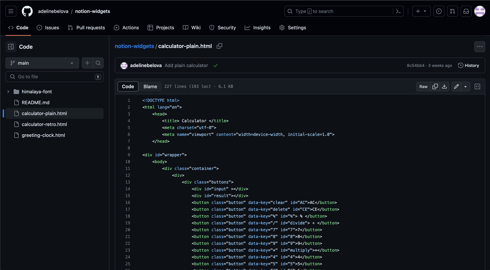
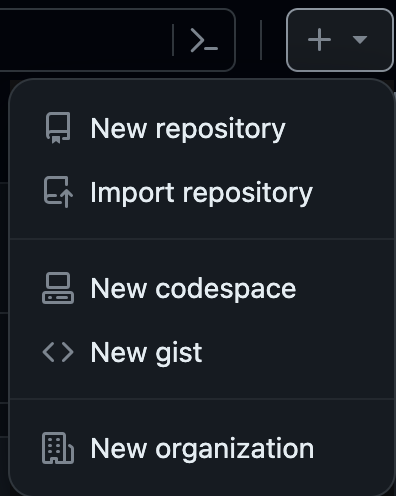
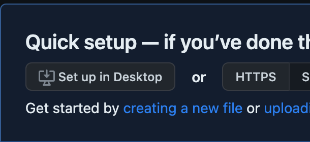
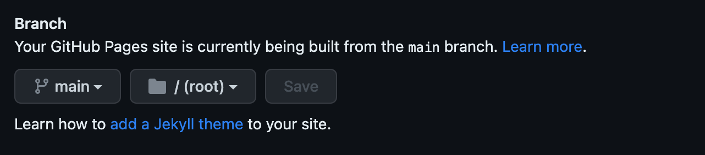
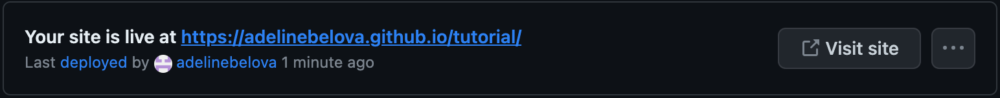
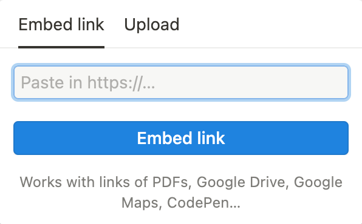

How to Add Widgets to Notion
Method One:
1. Copy the embedded link on the widget’s page. Paste the link into an embedded element in your Notion page.

That’s it! The widget will automatically update.
Method Two:
2. Create your own embedded link using the source code. This way, if the link is ever removed or changed, you will always have it!
- Go to the source code link on the widget’s page. 
- Copy all of the code for your widget of choice.
- Create a Github account, and select “New Repository” from the + dropdown menu on the top-right corner. 
- Give it a name and create the repository.
- Select “creating a new file” 
- Name it “index.html”, and paste the widget’s code. From there, click “Commit Changes”.
- Once committed, go to “Settings” and find “Pages” under the “Code and Automation” section.
- Under Branch, select “main”, “/root”, then hit save. This will create a website that will host your widget. 
- After several minutes, reload the page and select “Visit Site” at the top. It may take some time to deploy. 
- Your widget will now appear on the page! Simply copy the link to the page, and paste it into an embedded element on Notion. 
- Your widget is now live on your Notion page! As long as your Github repository remains active, you will always have your widget.